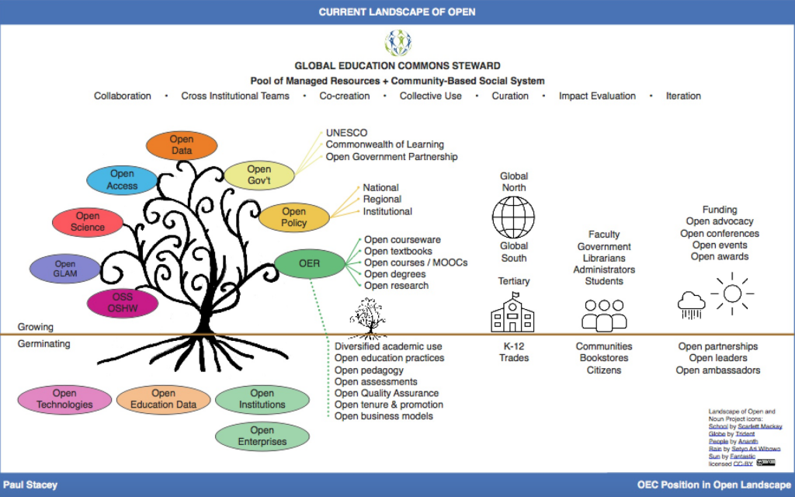
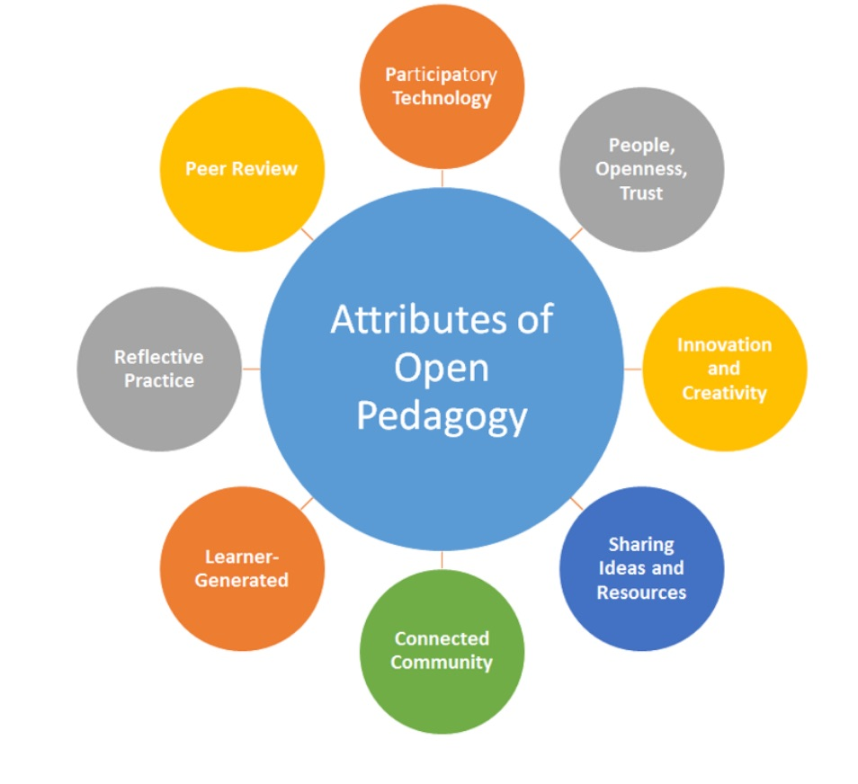

11.4 Pedagogia aberta



11.4.1 O que é pedagogia aberta?
David Wiley (2013) definiu originalmente a pedagogia aberta como:
o conjunto de práticas de ensino e aprendizagem que só são possíveis no contexto do acesso livre e das permissões 4R características dos recursos educacionais abertos.
Como veremos mais adiante nesta seção, Wiley recuou posteriormente (2017) em relação a esta definição e questionou a própria ideia de uma pedagogia aberta. No entanto, a sua formulação inicial influenciou a estruturação do debate sobre a pedagogia aberta em torno do uso de REA (ver DeRosa e Jhangiani, 2017, para uma análise detalhada sobre as origens e desenvolvimento da pedagogia aberta desde 2013).
A título de exemplo, em 2019, a BCcampus definia a pedagogia aberta da seguinte forma:
A pedagogia aberta, também conhecida como práticas educacionais abertas (PEA), é a utilização de recursos educacionais abertos (REA) para apoiar a aprendizagem, ou a partilha aberta de práticas de ensino com o objetivo de melhorar a educação e a formação nos níveis institucional, profissional e individual.
Contudo, reconhece-se atualmente que, para que os recursos educacionais abertos registem adoção generalizada e transformem as práticas letivas, devem ser integrados num ecossistema mais amplo de ensino e aprendizagem, do qual a pedagogia aberta constitui elemento crítico. A definição das Bibliotecas da Universidade do Texas Arlington reflete esta perspectiva:
A pedagogia aberta é a prática de envolver os estudantes como criadores de informação e não meramente como consumidores. Trata-se de uma modalidade de aprendizagem experiencial em que os estudantes demonstram compreensão através do próprio ato de criação. Os resultados da pedagogia aberta são criados pelos estudantes e licenciados abertamente, permitindo a sua utilidade fora dos limites da sala de aula de modo a impactar a comunidade de forma positiva. Os projetos abertos resultam frequentemente na concepção de recursos educacionais abertos (REA). Os REA são materiais didáticos gratuitos licenciados para permitir a revisão e a reutilização. Podem assumir o formato de livros didáticos, vídeos, testes de avaliação, módulos de estudo e outros recursos.
Esta definição apresenta a vantagem de focar o comportamento do estudante, encarando os materiais educacionais abertos como subprodutos da sua aprendizagem e não meramente como ponto de partida, embora a pedagogia aberta integre igualmente os REA como base letiva.
Hegarty (2015) descreve oito atributos da pedagogia aberta:
- tecnologias participativas: mídias de construção social, tais como blogs, wikis e redes de partilha digital;
- pessoas, abertura e confiança: a predisposição dos estudantes para a aprendizagem é sensível, sendo improvável que a participação e as interações se desenvolvam na ausência de relações de confiança mútuas (Mak et al., 2010);
- inovação e criatividade: estruturação de modelos de ensino e aprendizagem que otimizem a utilização de REA, priorizando mídias e métodos digitais que estimulem a partilha de conhecimentos e recursos;
- partilha de ideias e recursos: a pedagogia aberta assenta no pressuposto de os pares partilharem com facilidade no âmbito de uma comunidade profissional conectada e de mútua confiança;
- comunidade conectada: uma rede interligada por suporte tecnológico com interesses acadêmicos comuns;
- geração pelo aprendiz (learner-generated): exige a abertura dos processos letivos para capacitar os estudantes a assumirem a liderança, solucionarem problemas e trabalharem de forma colaborativa na produção de recursos que partilham, debatem, reconfiguram e aplicam;
- prática reflexiva: a cooperação entre estudantes e docentes em regime de parceria facilita processos de reflexão pedagógica profunda;
- revisão por pares: Conole (2014) encara os aprendizes como editores e utilizadores de ferramentas abertas, integrando as interações e a crítica entre pares na própria experiência de aprendizagem.
Hegarty salienta ainda a complexidade de isolar os componentes da pedagogia aberta em dimensões rígidas, verificando-se sobreposições constantes entre os oito atributos descritos.


DeRosa e Robison (2017) definem a ideia central da pedagogia aberta no seguinte excerto:
Ao substituir um livro didático estático — ou outro material letivo fechado — por um recurso de licenciamento aberto, o corpo docente tem a oportunidade de redefinir a relação entre os estudantes e a informação a que acedem na disciplina. Em vez de conceber o conhecimento como algo que os estudantes necessitam de descarregar nas suas mentes, passamos a encará-lo como um processo em contínua criação e revisão. Quer os alunos colaborem ou não no desenvolvimento e revisão dos REA, esta relação redefinida com os "textos" da disciplina é central para a filosofia de aprendizagem que o curso preconiza. Se os docentes envolvem os seus estudantes na interação com os REA, essa dinâmica torna-se ainda mais explícita, esperando-se que analisem criticamente e deem contributos para o corpo de conhecimentos de que estão a aprender. Neste sentido, o conhecimento deixa de ser concebido como um produto com início e fim demarcados, passando a constituir um processo no qual os estudantes participam, idealmente, para além dos limites temporais da disciplina.
11.4.2 Exemplos de pedagogia aberta
Delineia-se uma articulação estreita entre o trabalho em rede, ferramentas sociais como blogs e wikis (que permitem aos estudantes conceber recursos educacionais abertos) e a pedagogia aberta.
A disciplina de Jon Beasley-Murray, na qual os estudantes elaboraram artigos da Wikipédia sobre literatura latino-americana, constitui um exemplo de referência, a par do portal de recursos para exames de matemática (Math Exam Resources) estruturado por estudantes de pós-graduação na UBC (ver Capítulo 9, Seção 9.8.3). Esta metodologia reveste-se de valor no combate a enviesamentos culturais e históricos, através da realização de maratonas de edição da Wikipédia (edit-a-thons). Como exemplo, citem-se as iniciativas Women in Red/Indigenous Women e Indigenous Literature Edit-a-Thon.
A Universidade de Guadalajara (México) disponibiliza um portal web (em inglês) que reúne diversos exemplos práticos de pedagogia aberta desenvolvidos internacionalmente no âmbito do seu projeto Agora.
Outra manifestação da pedagogia aberta reside na estruturação de cursos de graduação livres de manuais escolares obrigatórios comerciais, designados por diplomas sem custos de manuais (Zed Creds, Z-degrees ou ZTC - zero textbook cost). O Mestrado em Aprendizagem e Tecnologia da Universidade de Royal Roads constitui a primeira pós-graduação no Canadá a eliminar a obrigatoriedade de aquisição de manuais. Os estudantes acedem a todos os recursos de estudo através de REA, e-books, artigos científicos de acesso aberto e outros materiais digitais gratuitos. Estas iniciativas visam alargar o acesso à educação e potenciar o aproveitamento dos estudantes.
Diversas propostas práticas de pedagogia aberta encontram-se reunidas nos trabalhos de Jhangiani e Biswas-Diener (2017) e no portal Open Pedagogy Notebook.
Finalmente, identifica-se um movimento focado nas infraestruturas e tecnologias educacionais abertas, estimulando as instituições e os estudantes a debater a propriedade dos dados e das tecnologias digitais aplicadas ao ensino, explorando de que forma as práticas abertas podem ser potenciadas por ferramentas de código aberto (ver, por exemplo, o consórcio OpenETC).
11.4.3 A necessidade de estruturar quadros de apoio aos recursos educacionais abertos
A pesquisa de referenciais pedagógicos e organizacionais que deem suporte ao uso de REA decorre da relativa lentidão na sua adoção geral. A título de exemplo, os docentes revelam-se hesitantes em abandonar manuais comerciais consolidados do primeiro ano, dado que estes vêm acompanhados de recursos auxiliares, como portais interativos com perguntas e respostas de exames, testes de escolha múltipla e leituras complementares. Os manuais abertos necessitam de disponibilizar recursos de apoio e suporte equivalentes para competir com as edições comerciais.
Paul Stacey, Diretor do Open Education Consortium, refletiu (2018) que se dedica excessiva atenção ao licenciamento e à produção de conteúdos em detrimento da gestão coletiva dos recursos abertos para garantir a sua sustentabilidade. Argumenta que os REA exigem dinâmicas de partilha de bens comuns (commoning), refletindo a gestão sustentável de recursos e serviços de base comunitária. Stacey propõe:
- um sistema social direcionado para a gestão a longo prazo dos recursos, salvaguardando a identidade comunitária e os valores partilhados;
- um sistema autogovernado no qual as comunidades façam a gestão dos recursos (esgotáveis e renováveis) com dependência nula ou residual do mercado corporativo ou do Estado. A existência de uma comunidade e de um conjunto de materiais é insuficiente; exige-se a definição de protocolos, valores e normas partilhados pela comunidade para a gestão dos recursos.
A pedagogia aberta pode constituir a dimensão didática deste enquadramento, embora Stacey aponte para a necessidade de estruturas de suporte social e de gestão mais amplas.
11.4.4 A pedagogia aberta constitui um conceito útil?
Alguns leitores poderão rever-se na figura de Monsieur Jourdain, personagem de Molière em O Burguês Fidalgo: "Falo prosa há 40 anos sem o saber". O conceito de pedagogia aberta detém um longo percurso histórico, apesar do impulso recente decorrente do desenvolvimento dos REA.
Lord Crowther, no discurso de apresentação do alvará da Open University britânica em 1969, definiu a instituição nos seguintes termos:
- aberta às pessoas: "Definimos como premissa", referiu a Comissão de Planeamento, "que não seriam exigidas qualificações acadêmicas formais para admissão como estudante... Qualquer pessoa pode tentar, e apenas a falta de aproveitamento letivo impedirá a continuação dos estudos".
- aberta aos locais: "Esta universidade não possui claustros (palavra que significa fechado). Não temos pátios fechados por edifícios... Onde quer que a língua inglesa seja falada, compreendida ou utilizada como meio de estudo, e onde quer que existam homens e mulheres que procurem desenvolver as suas potencialidades para além da oferta local — definindo aqui uma vasta parcela do mundo —, aí ofereceremos a nossa ajuda".
- aberta aos métodos: "Cada nova modalidade de comunicação humana será analisada para verificar a sua utilidade na elevação e alargamento do nível de compreensão humana".
- aberta às ideias: "Refere-se que a educação possui duas dimensões, ambas necessárias. Uma encara a mente como um vaso de capacidade variável, no qual se deve verter o máximo de conhecimentos e experiências que movem a sociedade. Trata-se do pendor pragmático da educação, tarefa de que muito nos ocuparemos. Mas a outra dimensão encara a mente antes como uma chama que importa acender com o sopro criador".
Sem afirmar se a pedagogia aberta corresponde a este sopro criador, constata-se que a abertura de métodos proposta por Crowther apresenta amplitude muito superior à das visões modernas da pedagogia aberta.
Claude Paquette, no rescaldo da reforma educativa no Quebec, escreveu em 1979:
Une pédagogie ouverte est centrée sur l’interaction qui existe dans une classe entre l’étudiant et l’environnement éducatif qui lui est proposé…. Il s’agit d’une façon de penser et d’une façon d’agir. L’éducateur aura donc pour rôle premier de contribuer à l’aménagement de cet environnement éducatif.
[Tradução: Uma pedagogia aberta centra-se na interação estabelecida em sala de aula entre o aprendiz e o ambiente educativo que lhe é proposto... Trata-se de uma forma de pensar e de agir. O papel principal do educador consiste, por isso, em colaborar na estruturação deste ambiente educativo.]
Verifica-se a ausência de referências a recursos educacionais abertos ou gratuitos nesta citação, cujos pressupostos poderiam constar diretamente do "Emílio" de Rousseau (1972). Trata-se da base conceitual que norteia a totalidade do Capítulo 6 desta obra.
David Wiley (criador do termo "recursos educacionais abertos") refere (2017):
O "aberto" ... nada nos diz sobre a natureza da aprendizagem. ... não é viável estruturar uma pedagogia sobre as premissas do aberto (pelo menos, nenhuma que não seja extremamente frágil). Os nossos compromissos de base na pedagogia devem assentar na compreensão de como a aprendizagem ocorre. Definidos os alinhamentos centrais em relação a uma teoria de aprendizagem, podemos associar o "aberto" ao nosso leque de metodologias de suporte para obter melhores resultados.
Questiono-me se não será incoerente falar em "pedagogia aberta" de todo em todo... Talvez devêssemos utilizar o termo "aberto" unicamente como qualificador de outras pedagogias, tais como "pedagogia construcionista aberta", "pedagogia conectivista aberta" ou "pedagogia construtivista aberta". Nestes cenários fica claro de que forma o aberto apoia e potencia os processos de aprendizagem.
Embora diversas práticas associadas à pedagogia aberta antecedam a criação de recursos educacionais abertos, os REA tornam estes processos mais simples de implementar e mais eficazes. Mas constituirá isto uma nova pedagogia?
Tannis Morgan (2017) analisa esta questão com base na sua experiência no projeto Agora da Universidade de Guadalajara:
O processo de design do Agora focou no que o design aberto visava atingir, sintetizado em:
- O aberto como meio para fomentar uma cultura de colaboração entre docentes da universidade e de diferentes disciplinas;
- O aberto como meio de conexão com uma comunidade global mais ampla;
- O aberto como meio de desafiar e expandir a compreensão sobre a aprendizagem centrada no estudante;
- O aberto como meio de desafiar modos de atuação, explorando os recursos da tecnologia digital e da aprendizagem móvel;
- O aberto como meio de apoiar o corpo docente no desenvolvimento de melhores práticas de ensino e aprendizagem;
- O aberto como meio de criar uma abordagem sustentável para o desenvolvimento pedagógico dos docentes.
No final, concebemos conteúdos alinhados com as premissas dos 5Rs, mas o objetivo do nosso design pedagógico não residia na criação de REA como fim em si ou componente indispensável da pedagogia aberta. O Agora incorporava diferentes perspectivas — behaviorismo, conectivismo, construtivismo, construcionismo —, mas a designação conceitual assume papel secundário. O design da pedagogia aberta revelou-se, por vezes, assente na tecnologia, e noutras ocasiões prescindiu por completo de suportes digitais ou de internet. Os REA não determinaram uma pedagogia diferente; a pedagogia aberta do Agora representou uma articulação de atividades e práticas que, pontualmente, resultaram em REA e, noutras ocasiões, não.
A pedagogia foca fundamentalmente na prática letiva: o que professores e alunos fazem. A prática é norteada por ideias e pressupostos conceituais, distinguindo-se contudo da filosofia. A aprendizagem ativa ou a construção de conhecimento pelos estudantes (com ou sem REA) constituem pedagogias; o "aberto" enquadra-se como valor ou ideia orientadora. Face aos excertos citados, o aberto funciona antes como filosofia que orienta a prática do que como a prática em si. Trata-se, contudo, de uma distinção acadêmica. Os REA impulsionam transformações reais nas práticas de docência. Prefiro uma visão mais ampla para o ensino na era digital do que uma dependência estrita dos REA.
11.4.5 Outra visão para a pedagogia na era digital
A disponibilidade crescente de conteúdos abertos de qualidade tende a apoiar a transição do modelo centrado na transmissão de informação pelo professor para um modelo focado na gestão do conhecimento pelo estudante. Na era digital, exige-se maior centralidade no desenvolvimento de competências integradas em domínios temáticos do que na memorização de conteúdos.
A integração de recursos educacionais abertos pode apoiar esta evolução sob diversas formas, tais como:
- uma abordagem letiva centrada no aprendiz, na qual os estudantes pesquisam e acessam conteúdos na internet (e em contextos reais) para o desenvolvimento de competências e conhecimentos definidos pelo docente, ou gerem o seu percurso de aprendizagem de forma autônoma; contudo, a pesquisa de recursos não deve restringir-se a repositórios formais de REA, englobando a totalidade da internet, dado que saber avaliar criticamente a fiabilidade das fontes digitais constitui uma competência essencial para os alunos;
- consórcios de docentes ou instituições a produzir recursos de estudo comuns num programa letivo amplo, partilhados internamente e publicamente. A par dos conteúdos gratuitos, partilham-se os referenciais instrucionais, os resultados de aprendizagem visados, as estratégias de avaliação, os modelos de tutoria e suporte ao aluno, as atividades letivas e os modelos de avaliação do programa, permitindo que outros formadores adaptem estas dimensões aos seus contextos. Esta dinâmica é visível em projetos como:
- o Open Learning Initiative da Carnegie Mellon;
- o portal OpenLearn da Open University britânica;
- a Virtual University of Small States of the Commonwealth;
- a iniciativa OER Africa;
- a rede OERu.
Em síntese, estes avanços tendem a promover a retração dos formatos letivos expositivos clássicos a favor de metodologias baseadas em projetos, na resolução de problemas e na aprendizagem colaborativa. Paralelamente, promove-se a transição de exames escritos de data e local fixos para modelos de avaliação contínua assentes em portfólios digitais.
O papel do docente desloca-se para a orientação dos estudantes sobre onde e como pesquisar recursos, como avaliar a relevância e fiabilidade da informação, diferenciando conteúdos centrais de dados secundários, e no apoio à análise, aplicação e apresentação dos conhecimentos, num design instrucional consistente com objetivos letivos focados no desenvolvimento de competências. Os estudantes trabalharão predominantemente on-line e de forma colaborativa, produzindo recursos multimídia como evidências de aprendizagem, gerindo portfólios digitais de trabalho e selecionando produções para avaliação.
Trata-se de uma visão pedagógica mais ampla do que a estruturada unicamente em torno dos REA.
11.4.6 Conclusão
Em síntese:
- os recursos educativos apresentam-se progressivamente mais abertos e acessíveis a docentes e aprendizes;
- os REA abrem possibilidades para a participação ativa dos estudantes na seleção e produção de materiais de estudo;
- é necessário integrar os REA em referenciais pedagógicos consistentes que otimizem o potencial destes recursos;
- os REA podem impulsionar uma pedagogia aberta de raiz, contudo o cenário mais provável aponta para a adaptação de metodologias pedagógicas consolidadas que beneficiem do suporte aberto;
- torna-se prioritário estruturar ambientes organizacionais e de gestão de suporte ao desenvolvimento de REA de qualidade, impedindo que estes recursos subsistam isolados;
- a adoção de práticas abertas e de REA deve ser orientada por uma visão pedagógica focada nas competências e saberes necessários aos estudantes na era digital. Os REA devem integrar-se em conceitos didáticos mais amplos do que meramente a "pedagogia aberta".
Referências
Conole, G. (2014) The 7Cs of Learning Design – a new approach to rethinking design practice 9th International Conference on Networked Learning, Edinburgh
Crowther, G. (1969) This is the Open University, London, UK, 23 July
DeRosa, R. and Jhangiani, R. (2017) Open Pedagogy, in Mays, E. (ed.) A Guide to making Open Textbooks with Students, The Rebus Community
DeRosa, R. and Robison, S. (2017) From OER to Open Pedagogy: Harnessing the Power of Open in Jhangiani, R. S. and Biswas-Diener, R. (2017) Open: The Philosophy and Practices that are Revolutionizing Education and Science London: Ubiquity Press.
Hegarty, B. (2015) Attributes of open pedagogy: a model for using open educational resources Educational Technology, July-August
Jhangiani, R. and Biswas-Diener, R. (eds.) (2017) Open: The Philosophy and Practices that are Revolutionizing Education and Science London: Ubiquity Press.
Mak, S. et al. (2010). Blogs and forums as communication and learning tools in a MOOC in L. Dirckinck-Holmfeld et al. (Eds.), Proceedings of the 7th International Conference on Networked Learning 2010 (pp. 275–284)
Morgan, T. (2017) Reflections on #OER17 – From Beyond Content to Open Pedagogy Explorations in the Ed Tech World, 13 April
Paquette, C. (1979) Quelques fondements d’une pédagogie ouverte Québec Français, Vol. 36
Rousseau, J.-J. (1762) Émile, ou de l’Éducation (Trans. Allan Bloom). New York: Basic Books, 1979
Stacey, P. (2018) Global Education Commons Steward Musings on the Ed Tech Frontier, February 8
Wiley, D. (2017) When opens collide, iterating toward openness, 21 April
Atividade 11.4 Contemplando a pedagogia aberta
- De que forma a pedagogia aberta se distingue de outras metodologias letivas como a aprendizagem experiencial ou a aprendizagem baseada em problemas? O que torna a pedagogia aberta singular, caso se verifique alguma exclusividade? Trata-se de uma distinção relevante?
- Analise um módulo ou tema letivo sob a sua responsabilidade atualmente. De que forma poderia redesenhá-lo para incorporar os princípios da pedagogia aberta? Quais as vantagens e desvantagens decorrentes desta transição?
- Para além do seu tempo e dedicação pessoal, que apoios institucionais seriam necessários para integrar REA no seu ensino de forma bem-sucedida?